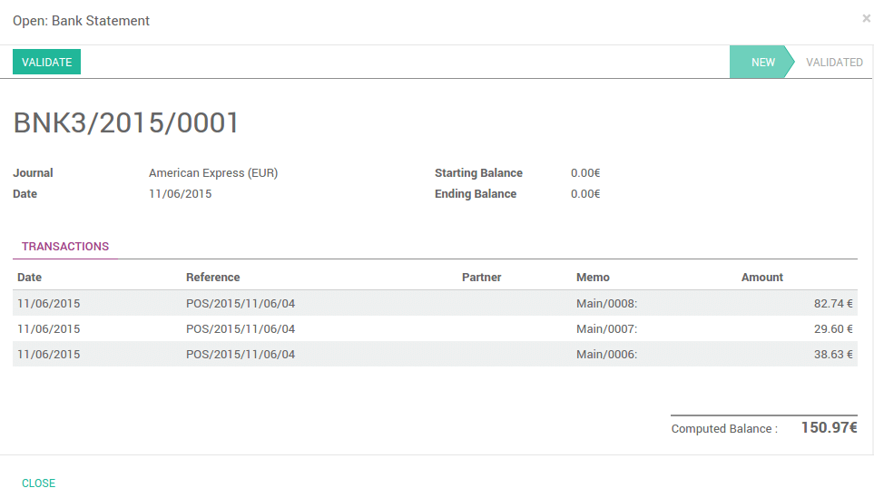

Общая информация
Онлайн приложение Odoo Рабочее Место Кассира основано на простом и дружественном интерфейсе пользователя. Приложение Рабочее Место Кассира можно использовать онлайн или в автономном режиме на IPad, Android планшете или ноутбуке.
В Odoo приложение Рабочее Место Кассира полностью интегрировано с приложениями Складской учет и Бухгалтерия. Любая транзакция с вашего РМК будет автоматически зарегистрирована в управлении складом и бухгалтерских проводках, и даже в вашей CRM заказчик может быть определене из приложения.
Вы сможете запустить статистику и сбор данных в реальном времени со всех ваших магазинов без проблем связанных с интеграцией нескольких внешних приложений.
Настройка
Установка Рабочего Места Кассира
Начните с установки приложения Рабочее место кассира приложение. Перейдите в :menuselection: [UNKNOWN NODE title_reference] и установите Рабочее Место Кассира.

Не забудьте установить бухгалтерский план счетов. Если этого не сделать, то перейдите в приложение Выставление счетов/Бухгалтерский учет и нажмите на Обзор существующих стран:

Затем выберите тот, который вы хотите установить.
Когда это будет сделано, тогда все будет готово, чтобы использовать данную кассу.
Добавление товаров
Для добавления продуктов из Инфо-панели РМК перейдите в :menuselection:[UNKNOWN NODE problematic]Чеки --> Продукты и нажмите на Создать.
Первым примером будут апельсины с ценой 3 руб./кг. Во вкладке Продажи, вы можете увидеть конфигурации РМК. Здесь вы можете задать категорию товара, указать, что продукт должен быть взвешен или нет и гарантировать, что он будет доступна на РМК.

Таким же образом, можно добавить лимоны, тыква, красный лук, бананы... в базу данных.
Совет
Как легко управлять категориями?
Если у вас уже есть база данных с вашими продуктами, вы можете легко установить Рабочее Место Кассира с помощью представления Канбан и группировку товаров по РМК.

Настройка способа оплаты
Чтобы настроить новый способ оплаты перейдите в и нажмите на Создать.

После того как вы создали имя и тип способа оплаты, вы можете перейти на вкладку РМК и убедиться, что этот способ оплаты был активирован для РМК.
Настройка Рабочего Места Кассира
Перейдите в , нажмите на РМК Main. Отредактируйте настройки кассы и добавьте пользовательский метод оплаты в доступные способы оплаты.

Вы можете настроить каждую кассу для вашего оборудования, местоположению,...
Теперь вы готовы сделать свой первый шаг с вашей кассой.
Ваши первые шаги на Рабочем Месте Кассира
Ваш первый чек
На инфо-панели, вы можете увидеть ваши кассы, нажмите кнопку Новая смена:

Вы попадете на главный экран интерфейса кассира:

Справа вы видите список товаров с категориями на да ними. Если вы нажмете на товар, он будет добавлен в чек. Вы можете сами установить правильное количество или вес, набрав его на клавиатуре.
Оплата
После того, как заказ будет завершен, нажмите на Оплата. Вы можете выбрать способ оплаты клиентом. В этом примере, клиент должен вам 10.84 руб. и платит 20 руб. одной купюрой. Когда это сделано, нажмите Утвердить.

Ваш чек печатается и теперь вы готовы сделать свою вторую продажу.
Закрытие смены
В конце дня, чтобы закрыть смену, нажмите на кнопку Закрыть смену в правом верхнем углу. Снова нажмите на кнопку закрыть на кассе. На этой странице вы увидите итог операциий

Если вы нажимаете на строку журнала способа оплаты появится список содержащий все проведенные операции по данному методу оплаты.
Теперь, теперь вам остается только утвердить и закрыть смену.